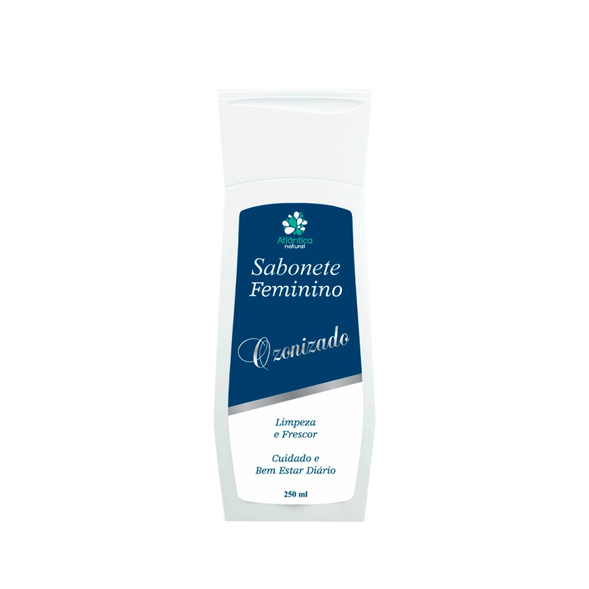

Mais vendidos

Slim Chá
O Slim Chá é um super chá completo de benefícios para a sua saúde e um emagrecimento de forma saudável, melhorando a digestão, auxiliando na retenção de líquidos, e muito mais.
Saiba Mais
Life Control
Life Control é um produto inovador projetado para reduzir a ansiedade e oferecer suporte na superação de vícios. Sua fórmula exclusiva atua no equilíbrio emocional, proporcionando uma abordagem holística para o bem-estar.
Saiba Mais
Sabonete Ozonizado
O sabonete da Atlântica Natural é responsável pela propriedade refrescante e substâncias altamente calmantes para evitar desconfortos causados por irritações. Contém ácido lático que equilibra o pH da mucosa vaginal. Tem ação bactericida, fungicida, virucida e cicatrizante, sendo um antisséptico natural. Multiuso podendo ser usado tanto no corpo, como no cabelo.
Saiba Mais